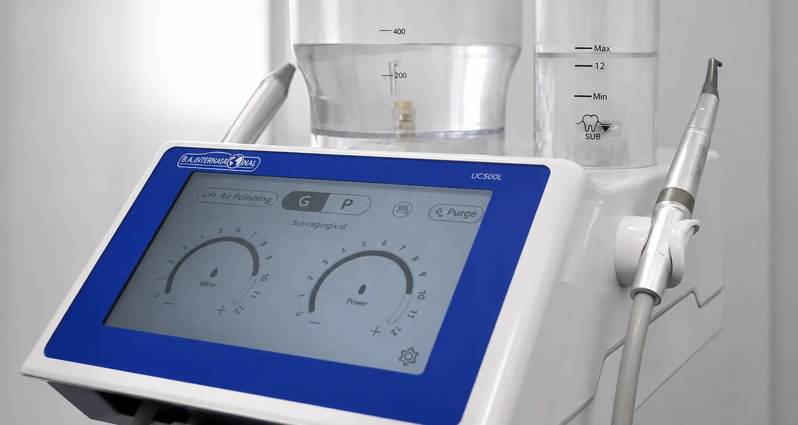

Wissen, das wir gerne teilen.
Hier beantworten wir Fragen, die uns im Praxisalltag häufig gestellt werden: verständlich, sachlich und auf Grundlage des aktuellen Wissensstandes. Unsere Beiträge sollen Orientierung geben. Die persönliche Beratung ersetzen sie nicht.
Aktuelle Schließzeiten, Vertretungspraxen und alle Notdienstnummern finden Sie stets aktuell in unserem Infoportal.


Was bringt Airflow wirklich?
Viele kennen Airflow als Methode gegen Verfärbungen. Der wichtigere Teil der Behandlung ist jedoch ein anderer: die Entfernung des bakteriellen Biofilms. Hier beantworten wir die Fragen, die uns dazu am häufigsten gestellt werden.
Ein Hinweis vorab: AIRFLOW ist ein Markenname. Das Verfahren dahinter heißt Pulverstrahlreinigung. Dabei trifft ein feines Gemisch aus Wasser, Luft und Pulver auf die Zahnoberfläche.
In unserer Praxis arbeiten wir mit einem Kombinationsgerät, das Ultraschallreinigung und Pulverstrahlreinigung vereint. Harte Auflagerungen und weicher Biofilm lassen sich damit in derselben Sitzung entfernen. Für Verfärbungen oberhalb des Zahnfleischrandes und für die Reinigung unterhalb davon verwenden wir zwei unterschiedliche Pulver, weil sich die beiden Aufgaben deutlich unterscheiden.

Entfernt Airflow nur Verfärbungen oder auch Biofilm?
Beides, und der Biofilm ist der wichtigere Teil. Biofilm ist ein weicher, bakterieller Belag, der sich täglich neu bildet, besonders am Zahnfleischrand und in den Zahnzwischenräumen. Die europäische Leitlinie zur Behandlung der Parodontitis ordnet die Kontrolle dieses Biofilms als festen Bestandteil der Vorbeugung und der Nachsorge ein (Sanz et al. 2020). Ein Konsenspapier einer Expertenkonferenz beschreibt die Pulverstrahlreinigung mit Glycin als sicher und wirksam, auch unterhalb des Zahnfleischrandes (Cobb et al. 2017).
Verfärbungen durch Kaffee, Tee oder Nikotin liegen dagegen außen auf dem Zahn. Sie lassen sich gut entfernen, die Eigenfarbe des Zahnes verändert sich dadurch aber nicht. Genau darin liegt der Unterschied zum Bleaching: Pulverstrahlreinigung legt die natürliche Zahnfarbe wieder frei, sie hellt sie nicht auf.
Ersetzt Airflow die Zahnsteinentfernung?
Nein. Harter Zahnstein wird weiterhin mit Ultraschall oder Handinstrumenten entfernt. Die Pulverstrahlreinigung wirkt auf weiche Beläge und Biofilm.
Für die Nachsorge nach einer Parodontitisbehandlung gilt allerdings eine Besonderheit. Eine systematische Übersichtsarbeit mit Metaanalyse von acht randomisierten Studien kommt zu dem Ergebnis, dass Pulverstrahlreinigung mit Erythritol in dieser Phase die Hand- und Ultraschallinstrumentierung ersetzen kann, bei vergleichbaren Werten für Taschentiefe und Blutung. Die Behandelten empfanden dabei weniger Schmerzen (Abdulbaqi et al. 2021).
In unserer Praxis kombinieren wir beides in der Regel innerhalb einer Sitzung: zuerst die Entfernung harter Auflagerungen, danach die Pulverstrahlreinigung.

Schädigt Airflow den Zahnschmelz?
Das hängt vom Pulver und vom Zustand des Zahnes ab. In einer Laboruntersuchung an gezogenen Zähnen nahm die Oberflächenrauheit von gesundem Schmelz nach 150 Sekunden Behandlung um 0,28 Mikrometer zu, wenn Erythritol verwendet wurde, und um 0,68 Mikrometer bei Natriumbikarbonat. An entkalktem Schmelz, den sogenannten White-Spot-Läsionen, fiel die Zunahme deutlich stärker aus (Guma et al. 2023). Es handelt sich um eine Untersuchung im Labor, deren Ergebnisse sich nicht eins zu eins auf die Behandlung im Mund übertragen lassen.
Für die Praxis bedeutet das zweierlei. Ein niedrigabrasives Pulver ist nicht dasselbe wie Natriumbikarbonat; unterhalb des Zahnfleischrandes verwenden wir ausschließlich das niedrigabrasive. Und an entkalkten Stellen sind wir zurückhaltend, was besonders nach einer kieferorthopädischen Behandlung eine Rolle spielt, weil dort White Spots häufig vorkommen.
Welches der niedrigabrasiven Pulver das beste ist, ist offen: Eine Netzwerk-Metaanalyse von neun Studien fand zwischen Erythritol, Glycin und Trehalose keine bedeutsamen Unterschiede (Yuan et al. 2025).
Für wen ist Airflow nicht geeignet?
Nicht für alle. Die Gebrauchsanweisungen der Prophylaxepulver schließen die Anwendung bei Asthma und chronischer Bronchitis ausdrücklich aus. Für das natriumhaltige Pulver kommen weitere Einschränkungen hinzu: natriumarme Ernährung, etwa bei Bluthochdruck, sowie eine bekannte Allergie gegen Aromastoffe. Auch freiliegende Zahnhälse, Karies im Schmelz und bestimmte Füllungsmaterialien werden damit nicht behandelt, weil die Oberfläche aufrauen kann.
Deshalb fragen wir vorher nach Vorerkrankungen. Wenn etwas dagegenspricht, reinigen wir auf einem anderen Weg.
Ist Airflow auch bei Implantaten sinnvoll?
Das Verfahren wird bei Implantaten eingesetzt und gilt als gut verträglich. Ein Vorteil gegenüber anderen Reinigungsmethoden ist jedoch nicht belegt: Eine systematische Übersichtsarbeit mit Metaanalyse von zwölf Studien kam zu dem Schluss, dass die Pulverstrahlreinigung bei Erkrankungen rund um Implantate vergleichbare, aber keine besseren Ergebnisse erzielte als andere Verfahren (Bi et al. 2023). Ein internationales Konsenspapier bewertet die Anwendung als effizient und patientenfreundlich, hält aber ausdrücklich fest, dass zu Langzeitwirkungen weitere Studien nötig sind (Liu et al. 2024).
Wie eine professionelle Zahnreinigung bei uns Schritt für Schritt abläuft, was danach zu beachten ist und was sie kostet, haben wir ausführlich im Infoportal zusammengestellt.
Ablauf und Kosten im InfoportalQuellen anzeigen
Welche Form der professionellen Zahnreinigung für Sie sinnvoll ist, hängt von Ihrer persönlichen Mundsituation ab: vom Zustand des Zahnfleisches, von vorhandenen Füllungen oder Implantaten und davon, wie stark sich bei Ihnen überhaupt Beläge bilden. Dieser Beitrag ersetzt deshalb keine persönliche Beratung und keine Untersuchung. Sprechen Sie uns an, wir schauen es uns gemeinsam an.
Ablauf, Empfehlungen und Kosten, ausführlich im Infoportal.
Zur PZR im InfoportalAlle Praxisnachrichten, Urlaubs- und Vertretungszeiten sowie ausführliche Informationen zu Behandlungen und Vorsorge, ständig gepflegt und in mehreren Sprachen.
Sprechzeiten
Außerhalb der Sprechzeiten: zahnärztlicher Notdienst 01801 116 116
Kontakt
Sie möchten einen Termin vereinbaren oder uns etwas mitteilen? Nutzen Sie ganz einfach unser Kontaktformular, oder noch einfacher: buchen Sie direkt online.